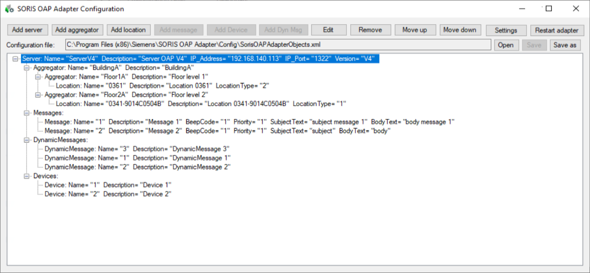

Start the OAP Configuration Tool
- From the .../AdditionalSW/OAP_Adapter_Configurator folder of the software distribution, available locally or on the installation DVD, run Siemens.GMS.SorisOAPAdapterConfig.exe.
- The Soris OAP Adapter Configuration Tool window opens and displays the SorisOAPAdapterConfig.xml data.
NOTE: Click Open and then select the destination folder to create a new file.
- The tool window include a menu bar at the top and a large data set area populated by the configured objects, which you can select to perform configuration actions.
Depending on the selection, from the menu bar, you can:
- Add server, to append a new OAP server.
- Add aggregator, to append a new folder object to the selected Server or Aggregator.
- Add location, to append a new location to the selected Server or Aggregator.
- Add message, to append a new message to Messages.
- Add Device, to append a new device to Devices.
- Add Dyn Msg, to append a new dynamic message to Dynamic Messages.
- Edit, to modify the selected item.
- Remove, to delete the selected item.
- Move up /Move down, to change the position of the selected item in the data structure.
- Settings, to configure general parameters.
- Restart Adapter, to restart the OAP adapter and enable the configuration changes.


The tool does not check data consistency and correctness. Pay attention in entering valid parameter values.